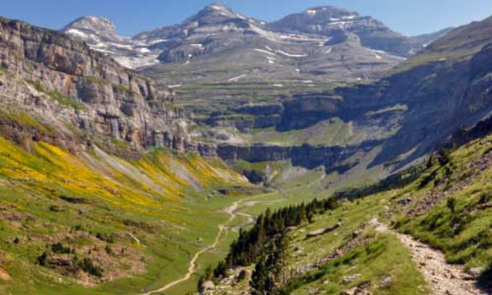

Béns naturals
A més del patrimoni cultural, el dossier destaca aquests espais naturals declarats Patrimoni de la Humanitat:
- Parc Nacional de Doñana — Andalusia (1994)
- Parc Nacional de Garajonay — Illes Canàries (1986)
- Pirineus – Mont Perdut — Aragó / França (1997)
